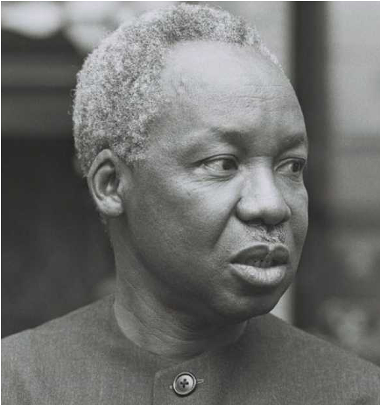

Mwl. Julius Nyerere
Julius Kambarage Nyerere (Swahili pronunciation: [ˈdʒuːlius kɑmˈbɑɾɑgɑ ɲɛˈɾɛɾɛ]) was a Tanzanian anti-colonial activist, politician, political theorist and one among the founding fathers of today's Tanzania!

Photo of Julius Kambarage Nyerere
Excerpt Timeline of Julius Nyerere's life
His Early Life
-
Childhood 1922–1934Julius Kambarage Nyerere was born on 13 April 1922 in Mwitongo, an area of the village of Butiama in Tanganyika's Mara Region. He was one of 25 surviving children of Nyerere Burito, the chief of the Zanaki people. Burito had been born in 1860 and given the name "Nyerere" ("caterpillar" in Zanaki) after a plague of worm caterpillars infested the local area at the time of his birth. Burito had been appointed chief in 1915, installed in that position by the German imperial administrators of what was then German East Africa; his position was also endorsed by the incoming British imperial administration. Burito had 22 wives, of whom Julius' mother, Mugaya Nyang'ombe, was the fifth. She had been born in 1892 and had married the chief in 1907, when she was fifteen. Mugaya bore Burito four sons and four daughters, of which Nyerere was the second child; two of his siblings died in infancy.
-
Schooling 1934–1942The British colonial administration encouraged the education of chiefs' sons, believing that this would help to perpetuate the chieftain system and prevent the development of a separate educated indigenous elite who might challenge colonial governance. At his father's prompting, Nyerere began his education at the Native Administration School in Mwisenge, Musoma in February 1934, about 35 km from his home. This placed him in a privileged position; most of his contemporaries at Butiama could not afford a primary education. His education was in Swahili, a language he had to learn while there. Nyerere excelled at the school, and after six months his exam results were such that he was allowed to skip a grade. He avoided sporting activities and preferred to read in his dormitory during free time.
-
Makerere College, Uganda 1943–1947In October 1941, Nyerere completed his secondary education and decided to study at Makerere College in the Ugandan city of Kampala. He secured a bursary to fund a teacher training course there, arriving in Uganda in January 1943. At Makerere, he studied alongside many of East Africa's most talented students, although spent little time socialising with others, instead focusing on his reading. He took courses in chemistry, biology, Latin, and Greek. Deepening his Catholicism, he studied the Papal Encyclicals and read the work of Catholic philosophers like Jacques Maritain; most influential however were the writings of the liberal British philosopher John Stuart Mill. He won a literary competition with an essay on the subjugation of women, for which he had applied Mill's ideas to Zanaki society. Nyerere was also an active member of the Makere Debating Society, and established a branch of Catholic Action at the university.
-
Early teaching 1947–1949On leaving Makerere, Nyerere returned home to Zanaki territory to build a house for his widowed mother, before spending his time reading and farming in Butiama. He was offered teaching positions at both the state-run Tabora Boys' School and the mission-run St Mary's, but chose the latter despite it offering a lower wage. He took part in a public debate with two teachers from the Tabora Boys' School, in which he argued against the statement that "The African has benefitted more than the European since the partition of Africa"; after winning the debate, he was subsequently banned from returning to the school. Outside school hours, he gave free lessons in English to older locals, and also gave talks on political issues. He also worked briefly as a price inspector for the government, going into stores to check what they were charging, although quit the position after the authorities ignored his reports about false pricing. While in Tabora, the woman whom Nyerere was arranged to marry, Magori Watiha, was sent to live with him to pursue her primary education there, although he forwarded her to live with his mother. Instead, he began courting Maria Gabriel, a teacher at Nyegina Primary School in Musoma; although from the Simbiti tribe, she shared with Nyerere a devout Catholicism. He proposed marriage to her and they became informally engaged at Christmas 1948.
-
Edinburgh University 1949–1952In April 1949, Nyerere flew from Dar es Salaam to Southampton, England. He then travelled, by train, from London to Edinburgh. In the city, Nyerere took lodgings in a building for "colonial persons" in The Grange suburb. Starting his studies at the University of Edinburgh, he began with a short course in chemistry and physics and also passed Higher English in the Scottish Universities Preliminary Examination. In October 1949 he was accepted for entry to study for a Master of Arts degree at the University of Edinburgh's Faculty of Arts; his was an Ordinary Degree of Master of Arts which, in contrast to common uses of the term "Master of Arts", was considered an undergraduate rather than postgraduate degree, the equivalent of a Bachelor of Arts in most English universities.
Political Activism
-
Founding TANU 1952–1955Having sailed aboard the SS Kenya Castle, Nyerere arrived back in Dar es Salaam in October 1952. He took the train to Mwanza and then a lake steamer to Musoma before reaching Zanaki lands. There, he built a mud-brick house for himself and his fiancé, Maria; they were married at Musoma mission on 24 January 1953. They soon moved to Pugu, closer to Dar es Salaam, when Nyerere was hired to teach history at St Francis' College, one of the leading schools for indigenous Africans in Tanganyika. In 1953 the couple had their first child, Andrew. Nyerere became increasingly involved in politics; in April 1953, he was elected president of the Tanganyika African Association (TAA). His ability to take on the position was influenced by his good oratorical skills and by the fact that he was Zanaki; had he been from one of the larger ethnic groups he may have faced greater opposition from members of rival tribes. Under Nyerere, the TAA gained an increasingly political dimension, devoted to the pursuit of Tanganyikan independence from the British Empire. Nyerere himself was, according to Bjerk, "catapulted to prominence" as "a standard-bearer of the burgeoning independence movement".
-
Touring Tanganyika 1955–1959Nyerere returned to Dar es Salaam in October 1955. From then until Tanzania secured independence, he toured the country almost continuously, often in TANU's Land Rover. The British colonial Governor of Tanganyika, Edward Twining, disliked Nyerere, regarding him as a racialist who wanted to impose indigenous domination over the European and South Asian minorities. In December 1955, Twining established the "multi-racial" United Tanganyika Party (UTP) to combat TANU's African nationalist message. Nyerere nevertheless stipulated that "we are fighting against colonialism, not against the whites". He befriended members of the white minority, such as Lady Marion Chesham, a U.S.-born widow of a British farmer, who served as a liaison between TANU and Twining's government.[121] A 1958 editorial in the TANU newsletter Sauti ya Tanu (Voice of TANU) that had been written by Nyerere called on the party's members to avoid participating in violence. It also criticised two of the country's district commissioners, accusing one of trying to undermine TANU and another of putting a chief on trial for "cooked-up reasons". In response, the government filed three counts of criminal libel. The trial took almost three months. Nyerere was found guilty, with the judge stipulating that he could either pay a £150 fine or go to prison for six months; he chose the former.
-
TANU in government 1959–1961In 1960, he attended a conference of independent African states in Addis Ababa, Ethiopia, at which he presented a paper calling for the formation of an East African Federation. He suggested that Tanganyika could delay its attainment of independence from the British Empire until neighbouring Kenya and Uganda were able to do the same. In his view, it would be much easier for the three countries to unite at the same point as independence than after it, for beyond that point their respective governments might feel that they were losing sovereignty through unification. Many senior TANU members opposed the idea of delaying Tanganyikan independence; the party had been growing, and as of 1960 had over a million members.
Premiership & Presidency
-
Premiership of Tanganyika 1961–1962On 9 December 1961, Tanganyika gained independence, an event marked by a ceremony at National Stadium.[132] A law was soon presented to the Assembly that would restrict citizenship to indigenous Africans; Nyerere spoke out against the bill, comparing its racialism to the ideas of Adolf Hitler and Hendrik Verwoerd, and threatened to resign if it passed. Six weeks after independence, in January 1962 Nyerere resigned as Prime Minister, intent on focusing on restructuring TANU and trying to "work out our own pattern of democracy". Retreating to become a parliamentary back bencher, he appointed close political ally Rashidi Kawawa as the new Prime Minister. He toured the country, giving speeches in towns and villages in which he emphasised the need for self-reliance and hard work. In 1962, his alma mater at Edinburgh awarded Nyerere with a Honorary Degree of Doctor of Laws.
-
Presidency of Tanganyika 1962–1964On 9 December 1962, a year after independence, Tanganyika became a republic. Nyerere moved into the State House in Dar es Salaam, the former official residence of British governors. Nyerere disliked life in the building, but remained there until 1966. Nyerere appointed Kawawa his Vice President. In 1963, he put his name forward to be Rector of Edinburgh University, vowing to travel to Scotland whenever needed; the position instead went to the actor James Robertson Justice. He made official visits to West Germany, the United States, Canada, Algeria, Scandinavia, Guinea, and Nigeria. In the U.S. he met President John F. Kennedy and although they personally liked each other, he failed to convince Kennedy to toughen his stance on apartheid South Africa.
-
Unification with Zanzibar 1964Following the Zanzibari Revolution, Abeid Karume declared himself President of a one-party state and began redistributing Arab-owned land among black African peasants. Hundreds of Arabs and Indians left, as did most of the island's British community. Western powers were reluctant to recognise Karume's government, whereas the Soviet Union, Eastern Bloc, and People's Republic of China quickly did so and offered the country aid. Nyerere was angry at this Western response as well as the wider Western failure to appreciate why black Zanzibaris had revolted in the first place.
-
Domestic and foreign affairs 1964–1966In the September 1965 general election, a presidential vote took place across Tanzania, although parliamentary elections occurred only on the mainland and not on Zanzibar. Although the one-party state meant that only TANU candidates could stand, the party's national executive selected multiple candidates for all but six seats, providing some democratic choice for voters. Two ministers, six junior ministers, and nine backbenchers lost their seats and were replaced. Both Derek Bryceson and Amur Jamal, the two non-indigenous cabinet members, were re-elected over black opponents. Nyerere stood unopposed in the presidential election, although the ballot allowed space to vote against his candidacy; ultimately he secured nearly 97% support.
-
The Arusha Declaration 1967–1970In January 1967, Nyerere attended a TANU National Executive meeting at Arusha. There, he presented its Committee with a new statement of party principles: the Arusha Declaration. This declaration affirmed the government's commitment to building a democratic socialist state and stressed the development of an ethos of self-reliance. In Nyerere's view, true independence was not possible while the country remained dependent on gifts and loans from other nations. It stipulated that renewed emphasis should be placed on developing the peasant agricultural economy to ensure greater self-sufficiency, even if this meant slower economic growth. After this point, the concept of socialism became central to the government's policy formation. To promote the Arusha Declaration, groups of TANU supporters marched through the countryside to raise awareness; in October, Nyerere accompanied one such eight-day march which covered 138 miles in his native Mara district.
His Final Years
-
Final years 1994–1999Nyerere remained active in international affairs, attending the 1994 Pan-African Congress, held in the Ugandan city of Kampala. In 1997, he gave a speech marking the fortieth anniversary of Ghanaian independence in which he expressed renewed support for Pan-African ideals and warning against a "return to the tribe" across the continent. He pointed to the example of growing European unity within the European Union as a model for African states to imitate. In the late 1990s he also reflected on his presidency, noting that although he made mistakes, particularly in prematurely pursuing nationalisation, he stood by the principles of the Arusha Declaration.